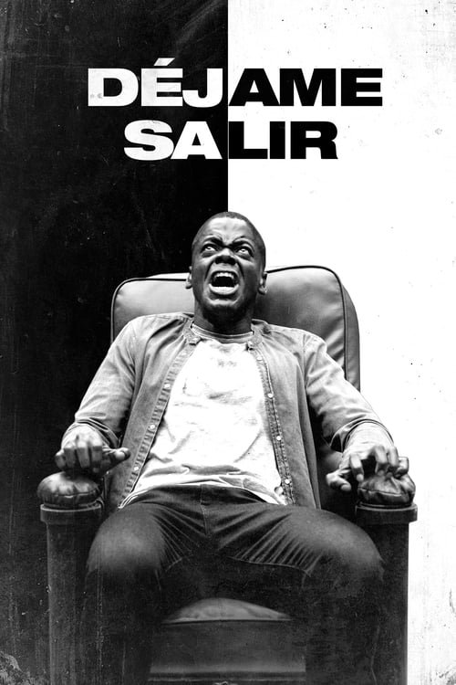

Déjame salir (2017)
Sinopsis Rápida
Una joven afroamericana visita a la familia de su novio blanco, pero descubre una verdad aterradora que la convierte en presa de una macabra conspiración.
Sinopsis Detallada
Chris, un joven afroamericano, viaja a la aislada casa de campo de la familia de su novia blanca, Rose. Mientras la tensión racial latente se hace palpable, Chris empieza a sospechar que hay algo siniestro oculto bajo la superficie de la aparente cordialidad. La película explora temas de racismo, identidad y la explotación de los cuerpos negros, culminando en un impactante giro final que deja al espectador sin aliento. El brillante guion, la dirección maestra de Jordan Peele y las actuaciones excepcionales elevan esta obra a un clásico moderno del terror.
¿Por qué tenés que verla?
- Una historia de terror inteligente y perturbadora que te mantendrá al borde del asiento.
- La dirección innovadora de Jordan Peele redefine el género del terror con una estética visual cautivadora y una atmósfera opresiva.
- Déjame salir desató un debate crucial sobre el racismo sistémico y su impacto en la sociedad, dejando un legado duradero en el cine.
- Sorprendentes giros argumentales que te harán cuestionar todo lo que has visto.
Idea Extra
Análisis del simbolismo y la alegoría racial en Déjame salir: un estudio de los elementos visuales, narrativos y contextuales que contribuyen a la crítica social de la película.